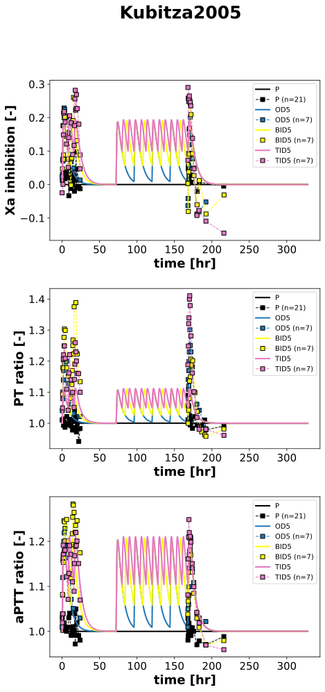

Kubitza2005
Models
Datasets
- rivaroxaban_BID10: Kubitza2005_rivaroxaban_BID10.tsv
- rivaroxaban_BID20: Kubitza2005_rivaroxaban_BID20.tsv
- rivaroxaban_BID30: Kubitza2005_rivaroxaban_BID30.tsv
- rivaroxaban_BID5: Kubitza2005_rivaroxaban_BID5.tsv
- factor Xa inhibition_BID10: Kubitza2005_factor Xa inhibition_BID10.tsv
- factor Xa inhibition_BID20: Kubitza2005_factor Xa inhibition_BID20.tsv
- factor Xa inhibition_BID30: Kubitza2005_factor Xa inhibition_BID30.tsv
- factor Xa inhibition_BID5: Kubitza2005_factor Xa inhibition_BID5.tsv
- factor Xa inhibition_P: Kubitza2005_factor Xa inhibition_P.tsv
- prothrombin time (change relative)_BID10: Kubitza2005_prothrombin time (change relative)_BID10.tsv
- prothrombin time (change relative)_BID20: Kubitza2005_prothrombin time (change relative)_BID20.tsv
- prothrombin time (change relative)_BID30: Kubitza2005_prothrombin time (change relative)_BID30.tsv
- prothrombin time (change relative)_BID5: Kubitza2005_prothrombin time (change relative)_BID5.tsv
- prothrombin time (change relative)_P: Kubitza2005_prothrombin time (change relative)_P.tsv
- aPTT (change relative)_BID10: Kubitza2005_aPTT (change relative)_BID10.tsv
- aPTT (change relative)_BID20: Kubitza2005_aPTT (change relative)_BID20.tsv
- aPTT (change relative)_BID30: Kubitza2005_aPTT (change relative)_BID30.tsv
- aPTT (change relative)_BID5: Kubitza2005_aPTT (change relative)_BID5.tsv
- aPTT (change relative)_P: Kubitza2005_aPTT (change relative)_P.tsv
- factor Xa inhibition_OD5: Kubitza2005_factor Xa inhibition_OD5.tsv
- factor Xa inhibition_TID5: Kubitza2005_factor Xa inhibition_TID5.tsv
- prothrombin time (change relative)_OD5: Kubitza2005_prothrombin time (change relative)_OD5.tsv
- prothrombin time (change relative)_TID5: Kubitza2005_prothrombin time (change relative)_TID5.tsv
- aPTT (change relative)_OD5: Kubitza2005_aPTT (change relative)_OD5.tsv
- aPTT (change relative)_TID5: Kubitza2005_aPTT (change relative)_TID5.tsv
Figures
- Fig3: Kubitza2005_Fig3.svg
- Fig1: Kubitza2005_Fig1.svg
- Fig2: Kubitza2005_Fig2.svg
{kind=link}
{kind=link}
Fig3

|
Fig1
Fig2
|  |
Code
../../../../experiments/studies/kubitza2005.py
from typing import Dict
from sbmlsim.data import DataSet, load_pkdb_dataframe
from sbmlsim.fit import FitMapping, FitData
from sbmlutils.console import console
from pkdb_models.models import rivaroxaban
from pkdb_models.models.rivaroxaban.experiments.base_experiment import (
RivaroxabanSimulationExperiment,
)
from pkdb_models.models.rivaroxaban.experiments.metadata import Tissue, Route, Dosing, ApplicationForm, Health, \
Fasting, RivaroxabanMappingMetaData, Coadministration
from sbmlsim.plot import Axis, Figure
from sbmlsim.simulation import Timecourse, TimecourseSim
from pkdb_models.models.rivaroxaban.helpers import run_experiments
class Kubitza2005(RivaroxabanSimulationExperiment):
"""Simulation experiment of Kubitza2005."""
formulations = ["P", "BID5", "BID10", "BID20", "BID30"]
formulations_5 = ["P", "OD5", "BID5", "TID5"]
all_formulations = list(set(formulations + formulations_5))
colors = {
"P": "black",
"BID5":"yellow",
"BID10": "tab:orange",
"BID20": "tab:green",
"BID30": "tab:red",
"OD5": "tab:blue",
"TID5": "tab:pink",
}
formulation_labels = {
"P": "Placebo",
"OD5": "Rivaroxaban 5 mg OD",
"BID5": "Rivaroxaban 5 mg BID",
"TID5": "Rivaroxaban 5 mg TID",
"BID10": "Rivaroxaban 10 mg BID",
"BID20": "Rivaroxaban 20 mg BID",
"BID30": "Rivaroxaban 30 mg BID",
}
doses = {
"P": 0,
"OD5": 5,
"BID5": 5,
"TID5": 5,
"BID10": 10,
"BID20": 20,
"BID30": 30,
}
bodyweight = 81.6
info_pk = {
"[Cve_riv]": "rivaroxaban"
}
info_pd = {
"Xa_inhibition": "factor Xa inhibition",
"PT_ratio": "prothrombin time (change relative)",
"aPTT_ratio": "aPTT (change relative)",
}
def datasets(self) -> Dict[str, DataSet]:
dsets = {}
fig_ids = ["Fig3", "Fig1A", "Fig1B", "Fig1C", "Fig2A", "Fig2B", "Fig2C"]
for fig_id in fig_ids:
df = load_pkdb_dataframe(f"{self.sid}_{fig_id}", data_path=self.data_path)
for label, df_label in df.groupby("label"):
dset = DataSet.from_df(df_label, self.ureg)
if "rivaroxaban" in label:
dset.unit_conversion("mean", 1 / self.Mr.riv)
dsets[label] = dset
# print(dsets)
return dsets
def simulations(self) -> Dict[str, TimecourseSim]:
Q_ = self.Q_
tcsims = {}
# dosing timepoints
timepoints_od = [72, 96, 120, 144, 168, 328]
timepoints_bid = [12, 72, 84, 96, 108, 120, 132, 144, 156, 168, 328]
timepoints_tid = [8, 16, 72, 80, 88, 96, 104, 112, 120, 128, 136, 144, 152, 160, 168, 328]
for formulation in self.all_formulations:
dose = self.doses[formulation]
if formulation == "P":
timepoints = timepoints_od
elif formulation.startswith("OD"):
timepoints = timepoints_od
elif formulation.startswith("BID"):
timepoints = timepoints_bid
elif formulation.startswith("TID"):
timepoints = timepoints_tid
tcs = [
Timecourse(
start=0,
end=timepoints[0] * 60, # [min]
steps=500,
changes={
**self.default_changes(),
"BW": Q_(self.bodyweight, "kg"),
"PODOSE_riv": Q_(dose, "mg"),
},
)
]
for ktp, tp in enumerate(timepoints):
if ktp == 0:
continue
tend = (timepoints[ktp] - timepoints[ktp - 1]) * 60 # [min]
tcs.append(
Timecourse(
start=0,
end=tend,
steps=500,
changes={
"PODOSE_riv": Q_(dose, "mg"),
},
)
)
tcsims[formulation] = TimecourseSim(tcs)
return tcsims
def fit_mappings(self) -> Dict[str, FitMapping]:
mappings = {}
for formulation in self.all_formulations:
# pharmacodynamics
for k, sid in enumerate(self.info_pd.keys()):
name = self.info_pd[sid]
mappings[f"fm_{name}_{formulation}"] = FitMapping(
self,
reference=FitData(
self,
dataset=f"{name}_{formulation}",
xid="time",
yid="mean",
yid_sd=None,
count="count",
),
observable=FitData(
self,
task=f"task_{formulation}",
xid="time",
yid=sid,
),
metadata=RivaroxabanMappingMetaData(
tissue=Tissue.PLASMA,
route=Route.PO,
application_form=ApplicationForm.TABLET,
dosing=Dosing.MULTIPLE,
health=Health.HEALTHY,
fasting=Fasting.FED,
),
)
# pharmacokinetics
if not formulation.startswith("BID"):
continue
for k, sid in enumerate(self.info_pk.keys()):
name = self.info_pk[sid]
mappings[f"fm_{name}_{formulation}"] = FitMapping(
self,
reference=FitData(
self,
dataset=f"{name}_{formulation}",
xid="time",
yid="mean",
yid_sd=None,
count="count",
),
observable=FitData(
self,
task=f"task_{formulation}",
xid="time",
yid=sid,
),
metadata=RivaroxabanMappingMetaData(
tissue=Tissue.PLASMA,
route=Route.PO,
application_form=ApplicationForm.TABLET,
dosing=Dosing.MULTIPLE,
health=Health.HEALTHY,
fasting=Fasting.FED,
),
)
return mappings
def figures(self) -> Dict[str, Figure]:
return {
**self.figure_pk(),
**self.figure_pd(),
}
def figure_pk(self) -> Dict[str, Figure]:
fig = Figure(
experiment=self,
sid="Fig3",
name=self.__class__.__name__
)
plots = fig.create_plots(
xaxis=Axis(self.label_time, unit=self.unit_time),
legend=True,
)
plots[0].set_yaxis(self.label_riv_plasma, unit=self.unit_riv)
for formulation in self.formulations:
for k, sid in enumerate(self.info_pk.keys()):
name = self.info_pk[sid]
plots[k].add_data(
task=f"task_{formulation}",
xid="time",
yid=sid,
label=self.formulation_labels[formulation],
color=self.colors[formulation],
)
if formulation == "P":
continue
plots[k].add_data(
dataset=f"{name}_{formulation}",
xid="time",
yid="mean",
yid_sd=None,
count="count",
label=self.formulation_labels[formulation],
color=self.colors[formulation],
)
return {fig.sid: fig}
def figure_pd(self) -> Dict[str, Figure]:
figures = {}
# --- Fig1: All Formulations (original) ---
fig1 = Figure(
experiment=self,
sid="Fig1",
num_rows=3,
name=self.__class__.__name__
)
plots1 = fig1.create_plots(
xaxis=Axis(self.label_time, unit=self.unit_time),
legend=True,
)
plots1[0].set_yaxis(self.labels["Xa_inhibition"], unit=self.units["Xa_inhibition"])
plots1[1].set_yaxis(self.labels["PT_ratio"], unit=self.units["PT_ratio"])
plots1[2].set_yaxis(self.labels["aPTT_ratio"], unit=self.units["aPTT_ratio"])
for formulation in self.formulations:
for k, sid in enumerate(self.info_pd.keys()):
name = self.info_pd[sid]
plots1[k].add_data(
task=f"task_{formulation}",
xid="time",
yid=sid,
label=self.formulation_labels[formulation],
color=self.colors[formulation],
)
plots1[k].add_data(
dataset=f"{name}_{formulation}",
xid="time",
yid="mean",
yid_sd=None,
count="count",
label=self.formulation_labels[formulation],
color=self.colors[formulation],
)
figures[fig1.sid] = fig1
# --- Fig2: Selected Formulations (P, OD5, BID5, TID5) ---
fig2 = Figure(
experiment=self,
sid="Fig2",
num_rows=3,
name=self.__class__.__name__
)
plots2 = fig2.create_plots(
xaxis=Axis(self.label_time, unit=self.unit_time),
legend=True,
)
plots2[0].set_yaxis(self.labels["Xa_inhibition"], unit=self.units["Xa_inhibition"])
plots2[1].set_yaxis(self.labels["PT_ratio"], unit=self.units["PT_ratio"])
plots2[2].set_yaxis(self.labels["aPTT_ratio"], unit=self.units["aPTT_ratio"])
for formulation in self.formulations_5:
for k, sid in enumerate(self.info_pd.keys()):
name = self.info_pd[sid]
plots2[k].add_data(
task=f"task_{formulation}",
xid="time",
yid=sid,
label=self.formulation_labels[formulation],
color=self.colors[formulation],
)
plots2[k].add_data(
dataset=f"{name}_{formulation}",
xid="time",
yid="mean",
yid_sd=None,
count="count",
label=self.formulation_labels[formulation],
color=self.colors[formulation],
)
figures[fig2.sid] = fig2
return figures
if __name__ == "__main__":
out = rivaroxaban.RESULTS_PATH_SIMULATION / Kubitza2005.__name__
out.mkdir(parents=True, exist_ok=True)
run_experiments(Kubitza2005, output_dir=Kubitza2005.__name__)